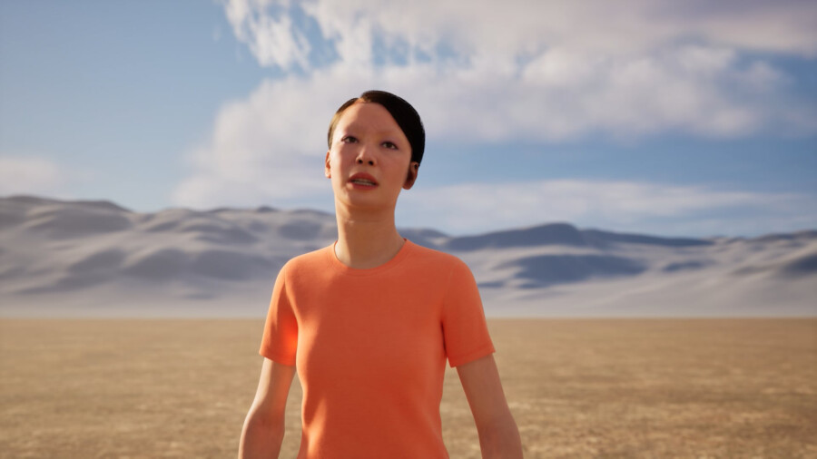

Onion City: Beyond Resolution – Films by Sabine Gruffat
Join us for a screening and conversation with artist Sabine Gruffat, who is touring a selection of her extensive filmography this spring. This special program favors ambiguity and resists resolution. The nearer the gaze, the more obscure the view. Illegibility here is not an escape from politics, but a way of inhabiting it differently: as a site of tension, friction, and possibility. These films draw from a range of genres and layered techniques. Images are processed to draw attention to the hidden logics in software, hardware, and materiality. In repurposing media, the works call attention to the histories from which meaning’s fragile frameworks emerge.
Lineup:
Disclaimer | Marseille, France | 2025 | 5 min | Digital
Headlines: BOMB PARTS | Detroit, MI | 2007 | 3 min | 16mm film to digital
A Return to the Return to Reason | Chapel Hill, NC | 2014 | 3 min | Laser etched 35mm film to digital
Brave New World | Chapel Hill, NC | 2015 | 7 min | 35mm film to digital
Black Oval White | Owego, NY | 2009 | 3 min | DV to digital
Take it Down | Chapel Hill, NC | 2019 | 13 min | Solarized color positive 35mm film to digital